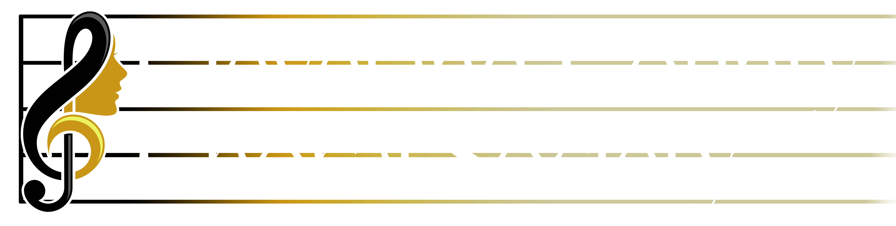
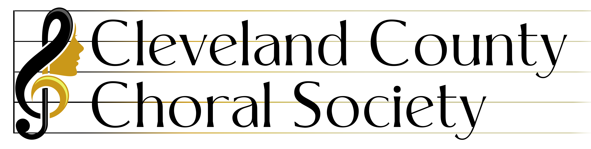
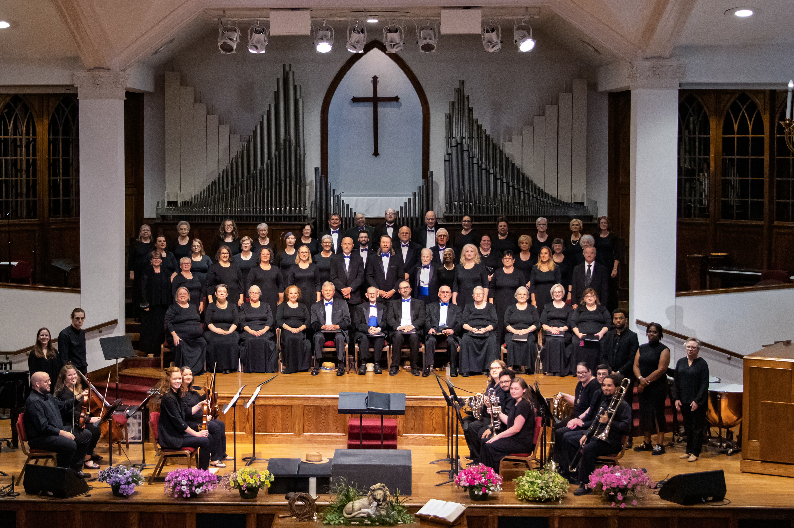

Supporter
Ensemble Builder
$25/mo$300 annually toward the player fund.
- Name listed as an instrumentalist supporter.
- Concert update emails.


Sponsor an Instrumentalist
Instrumentalists bring scale, color, and professional depth to CCCS concerts. The choir needs $5,000 annually to compensate players fairly and plan richer programs with confidence.

Annual Goal
Every sponsor gift is directed toward hiring instrumentalists for CCCS performances, helping the choir present music that needs more than voices alone.
Monthly Sponsorship
Monthly billing can be connected to your payment platform. For now, each tier starts an email so CCCS can set up the sponsor relationship personally.
Supporter
$300 annually toward the player fund.
Popular
About $500 annually toward a player chair.
Business
About $1,000 annually for concert musicians.
Lead Gift
Funds the full $5,000 annual player goal.
Why It Matters
Professional instrumentalists deserve compensation for rehearsal, preparation, and performance time.
With a player fund, CCCS can choose music for artistic fit instead of avoiding pieces with instrumental needs.
Monthly sponsors turn a large annual need into a dependable budget the choir can plan around.
Prefer an annual gift?
CCCS can also accept one-time gifts toward the $5,000 player fund from individuals, families, businesses, churches, and civic groups.